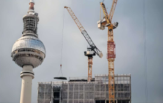

By Anne-Sylvaine Chassany — Berlin
Germany finance minister Lars Klingbeil has warned that a €170bn budget shortfall poses a “massive challenge” to the ruling coalition even as Europe’s largest economy embarks on a debt-funded splurge to bolster its military and modernise its infrastructure.
In March, Germany relaxed its constitutional borrowing limit to enable increased defence spending and to set up a €500bn special fund for its ageing infrastructure — a historic pivot from Berlin’s traditionally conservative fiscal stance.
However, the constitutional rule that limits net borrowing to 0.35 per cent of GDP annually continues to apply to other areas of the federal budget.
Presenting next year’s budget yesterday, Klingbeil said Berlin must close a budget hole of €170bn by 2029. As the coalition agreed not to increase taxes, this was likely to require deep cuts across ministries and reforms of the welfare system, he added.
“There is no time to waste,” he said.
The 2027 budget alone will have to cover a €30bn gap, “one of the biggest domestic challenges that we have to overcome in the next 12 months”.
“It may seem paradoxical,” said Jens Siudekum, an economist who advises Klingbeil. “With the reform of the debt brake, the casual observer may think there’s money for everything, but that’s not the case.”
The looming cuts pose a political risk for the government led by Chancellor Friedrich Merz, who has pledged to move from the infighting that plagued the previous coalition.
Merz’s Christian Democrats, who govern with Klingbeil’s Social Democrats with a razor-thin majority of 13 seats in parliament, have lately experienced their first significant tensions since taking office in May.
This month the chancellor was forced to delay a parliamentary vote on nominating three Supreme Court judges at the last minute because of dissent within his own ranks.
In June, Markus Söder, the leader of the CSU, the CDU’s Bavarian sister party, criticised Klingbeil for failing to deliver on electricity price cuts for consumers. In return, Söder secured an early implementation of a campaign promise of offering additional benefits to mothers.
The coalition also agreed to offset revenue losses for municipalities resulting from planned corporate tax cuts, while the finance ministry raised its interest payment forecasts upwards in light of increased borrowings.
The squeeze comes amid persistent uncertainty over Germany’s growth prospects. The export-heavy economy has stagnated over the past five years and is the most exposed to planned US tariffs of 15 per cent on EU goods.
Siudekum estimates that the tariffs could shave 0.2 to 0.3 points off GDP growth.
A finance ministry official noted that the government's growth assumptions remained cautious — zero projected for this year, and 1 per cent annually between 2026 and 2029. Some analysts predict that Germany could grow by up to 2 per cent next year thanks to its spending plan in defence and infrastructure and tax cuts aimed at spurring corporate spending.
“The nice solution would be that growth picks up,” Siudekum said, adding, however, that it would not be enough to plug the budget gap.